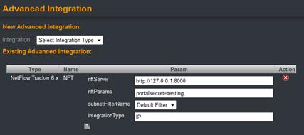
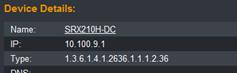

A future version of Auditor will include the ability to use XML to reference external applications (such as HR or an Asset management system) as the source to replicate the data from.
Integration
Auditor is an open application and has been designed with powerful integration facilities. Integration differs from tagging in that information is only displayed within Auditor not stored within the database. Integration can also be both ways; namely using Auditor to access information from in an external system, and/or providing mechanisms for external systems to access Auditor data/reports
Crafted URL
A productivity mechanism introduced in the first version of Auditor is the crafted URL. This allows users to quickly display relevant information without needing to learn or login to external systems. So, for example, from an IP address, you might click to show the NetFlow conversations for that address. This is done from calling the desired NetFlow report with the currently displayed IP address within Auditor.
Any system that can be accessed via a URL, or has a web-start via a URL call can be accessed. The crafted URL could be called and passed a one of four main variables:
· REBA_MAC – passes the current MAC address to the URL
· REBA_IP – passes the current IP address to the URL
· REBA_DEVICE – passes the device IP address to URL
· REBA_INTERFACE – passes the interface index to the URL
Once called, the application is then shown in the display frame. Crafted URL represents the fastest and easiest method of integration:
To set-up crafted URL integration select integration from the Admin dropdown:
To enable integration, select the "Type" required and provide a name (This name will be displayed on the appropriate page under tools). Optionally a filter (set in Subnet filters) can be set to restrict the integration URL; so you may have server tools just available to server subnet/vlans, and PC tools to various DNCP scopes:
Integrations can be added or deleted, or if the same name is inputted for an existing device, MAC, IP or interface integration, overwritten.
Once added, the integration appears as a "tool" at the IP, MAC, Device or interface level:
While there are no limits to the number or types of integrations available, Rebasoft recommend no more than 4 or 5 per level be configured to maintain clarity during application use.
Auditor Crafted URLs
In order to comply with the design goal of being open, all reports and links within Auditor are accessible via a URL. Hence it is possible to call Auditor from any web application. For example, a search with a search parameter can be called via a URL from any web application:
http://<server_IP>:<port>/?action=Seach&SearchValue=<any argument>
To aid security, and prevent users accessing Auditor from a system which they have already authenticated to, there is now the ability to embed portal users credentials into the url of a link called by the external application. The portal user settings are set within User administration by simply adding a user name and IP address to the portal users dialog.
The url called must include the "portalUser=<User Name>" parameter within the string. Where the <user name> is configured as above. Security is also provided by the addition of the source IP address from which the portal user is called from.
Below is an example of URL access:
Site Overview (passing username and password in url)
http://server_address/?action=siteOverview&siteSelection=Cell2&userName=admin&userPass=admin
More examples can be found on-line in our Knowledgebase (www.rebasoft.net/support)
Direct access to Data
In addition to Crafted URL, Auditor has also implemented REST. This way programmatic access to Auditor data can be built. The data is returned using JSON, though optionally XML can be specified as the output format during the call. The general format of REST calls to Auditor is shown below:
http://serverAddress:[port]/rest/<parameters>
The arguments permissible include:
REST Parameters |
Purpose |
|||||||||||||||
ips/ |
Returns an IP address range Permissible arguments include: |
|||||||||||||||
parameters:
|
||||||||||||||||
/rest/ips/ipaddress |
returns all elements of an IP address |
|||||||||||||||
/rest/ips/hostname |
resolves to current IP and returns same as IP address |
|||||||||||||||
/rest/ips/ipaddress?field=[lastmac,lastseentime,firstseentime,hostname,lastuser] |
||||||||||||||||
/rest/ips/?search=[partialip,partialhostname,lastmac,lastuser,firstseenbefore,lastseenbefore,firstseenafter,lastseenafter] |
returns matching ip address lists |
|||||||||||||||
In addition, there are REST access requests for MAC, Device, interface and system information:
http://serverAddress:[port]/rest/macs/[?search=|?count=]
http://serverAddress:[port]/rest/mac/[macaddress]
http://serverAddress:[port]/rest/users/[?search=|?count=]
http://serverAddress:[port]/rest/user/[user____domain]
(Four "_" are used as a delimiter between username and domain)
http://serverAddress:[port]/rest/system/
http://serverAddress:[port]/rest/devices/[?search=|?count=]
http://serverAddress:[port]/rest/device/[ipaddress]
http://serverAddress:[port]/rest/interfaces/[?search=|?count=]
http://serverAddress:[port]/rest/interface/deviceIP/[ifindex]
For example calling http://server_address/rest/ips/?search=172.21.40.19
Returns a short form result for matching list of addresses
Example calling http://server_address/rest/ip/172.21.40.198
Returns a long form result for the specific IP address
{"ip":
{"lastSeen":1303126954486,
"firstSeen":1290430785352,
"hostname":"",
"latestARPDevice":"172.21.40.254",
"type":"ip",
"latestMACHref":"http://172.21.40.198:8082/rest/mac/00:19:d1:e3:c2:ce",
"latestMAC":"00:19:d1:e3:c2:ce",
"id":-1407899450,
"lastSeenH":"Apr 18, 2011 12:42:34 PM",
"address":"172.21.40.198",
"latestARPIfIndex":14,
"firstSeenH":"Nov 22, 2010 12:59:45 PM",
"href":"http://172.21.40.198:8082/rest/ip/172.21.40.198"
Advanced Integration
Introduced in Auditor 2.2, advanced integration makes queries directly to specifically supported systems and displays natively within the Auditor dialog. The display of the application within the display frame does not take place, rather the reports show at MAC, IP, Device, User and Interface forensic

Configuration and administration
User administration
Auditor offers two levels of security – normal user or admin user. Admin users have the ability to create and manage sites, users, devices and communities. Normal users are just able to view reports and information captured by Auditor . This way, administrators could grant access to helpdesk staff without granting privileges to change the Auditor system settings.
Users administration is accessed from the Administration dropdown in the top frame; clicking the arrow:
Administrators are then presented with Users administration in the information frame:
To add a user, simply type a name and password and select whether this user is an admin user via the Admin tick box and then click "Add user".
To reset password or delete a user, click on the username from the list (administrators can also promote or demote a user from admin privileges at this stage).
Subnets
Subnet administration allows you define network segments and apply one or more in filters for use in Auditor. One reason this may be desirable is when defining integrations, where a particular tool or application to be called is only relevant to a set of devices in part of the network.
Subnets are defined from the subnets administration dialog:
Subnet administration
By default, a subnet encompassing all IP networks is defined. To create a subnet, simply provide a name and description (these are also seen elsewhere in Auditor reports, so it is worthwhile using meaning names) and a subnet together with the subnet mask.
Subnets can be deleted after creation if required.
Subnet filters
Once you have defined the desired subnets, you can create a filter. This is a matter of inputting a name and selection (or multi-selecting with "control" clicking the subnets) and then clicking "Add new subnet filter".
System settings administration
One of the first actions recommended is the configuration of system settings. System level settings are used throughout the application. Here administrators can set-up:
SNMP Settings
Syslog settings for alert output
Systems settings (these settings are reserved for future use)
Database settings
MAC Vendor table
OID Vendor database
Log level settings
System settings are accessed from the Administration dropdown in the top frame (clicking the arrow):
A summary of the current system settings and directory locations are shown at the bottom of the system settings page:
SNMP Settings
SNMP settings allow administrators to control Auditor SNMP settings. System wide community strings can be set (these can be overridden during device discovery) as well as enabling overrides for SNMP discovered information.
SNMP Community strings, if entered during device input, are used first. In the absence of a specified SNMP community string, system level SNMP communities are used in turn until a successful poll is performed. Auditor then stores the successful string with the device, this reduces the number of alerts that a device might generate if a community is used unsuccessfully. It is only necessary to use Read-only strings.
To add a new community simply type the string into the box & click "Add community"
To remove a community, simply click the cross next to the string to be removed
Auditor also has two new facilities requested by our customers, namely to change device name cases. Administrators can select UPPER or lower cases for storage and display; in which case following each SNMP poll, Auditor stores the device name in the required case. "Do nothing" simply accepts the device name (hostname) as configured from the polled device.
Sometimes, for legibility in Auditor, it is desirable to remove text from the device name. This may be useful if the device (hostname) is a FQDN format (such as cat3750-rm104.abcompany.com), you can then remove any desired element (for example ".abcompany.com") from the device name. This setting is also persistent even when the device is re-polled by SNMP.
Network Discovery
Auditor (V2.2 or later) provides the ability to automatically discover network devices using Cisco Discovery Protocol (CDP) and/or Link Layer Discovery Protocol (LLDP). These protocols rely upon the network devices to be discovered having CDP or LLDP enabled. The configuration guides of the various vendors can advise on how CDP/LLDP can be enabled.
CDP and LLDP have two operating modes. CDP and LLDP can be used to add devices to Auditors polling list, and this collect ARP, CAM and other information from the MIB. In addition CDP and LLDP can be used to resolve hostnames, such as the phone ID for Cisco IP phones.
Subnet filters can be applied to CDP and LLDP settings to limit the bounds of CDP and LLDP discovery, to reduce traffic and prevent devices inadvertently being added to Auditor’s device list.
Syslog settings for Alert output
The current release of Auditor has provision for alerting using syslog. Administrators can set multiple syslog servers depending on network preferences. To enter a syslog server, simply specify a name, required level and facility together with the target address. Administrators can also set the syslog level and facility to suit any log processing or alert handling system.
.
Syslog server receivers can be removed by simply clicking the cross next to the syslog to be removed
System Settings
This shows the current settings as configured during the installation process:
Database Settings
Database settings allow administrators to refine and set controls for the amount of data stored by Auditor. The system comes with a series of defaults, but depending on organization policy and the amount of disk available on the Auditor server these settings can be overridden.
Auditor shows a list of the largest tables on the system, if these are no-longer required they can be deleted:
MAC Address - Company ID
IEEE maintains an index of MAC address prefixes in relation to Vendors. This index changes from time-to-time, and any new release of Auditor will contain the latest index. If, however, you search Auditor and see a MAC address without a vendor entry, it may be that the index is out-of-date.
Since this file is a large file, a facility to download and update Auditor on request if available:
OID Vendor database
The OID Vendor database is used for vendors where Auditor needs to create a specific polling scheme, this dialog allows the Rebasoft development team to rapidly deliver a specific polling type for new types of vendor hardware.

Vendor OID
If a device type is displaying the OID string as numbers in the device overview page, it is possible to override this and put a description that may be of more value to users.

In this case putting "1.3.6.1.4.1.2636.1.1.1.2.36" together with a vendor and device description would allow administrators to display a consistent name for the device.
To change a description, simply input the OID with a new device and vendor name
Log settings
Auditor writes system and event information to its system log located in %\windows\system32\ - called MACAuditor.log. The default level is info. From time to time it may be necessary to collect and log more information. This can be set via Log settings – the default level is "Info". Once the log settings have been changed, the Auditor service needs to be restarted to take effect
Device administration
Any device that has a CAM table can be a data source for Auditor – this might be Layer 3 switch, Router or Firewall. Auditor uses SNMP to poll device MIB parameters using RFC standards to retrieve the required information from the device. Where a device is not compliant, it is possible to use a custom MIB – Rebasoft will consider adding vendor MIBs to Auditor to support customer requirements. We have also provided an over-ride to cater to devices where the MIB definitions present inconsistent results.
To add, delete or manage existing devices, administrators should select "Devices" from the administration dropdown & click the arrow:
Add a device
Devices can be added either directly from their IP address or from their assigned DNS name. Administrators can add up to 10 devices via the add device button. To add more than 10 devices, it is advisable to use the bulk loading dialog.
To add multiple devices, simply separate with a comma; for example "router1, switch1, firewall8" will add 3 devices – DNS will resolve the device to the current IP address. Up to 10 devices may be added using this method using IP addresses.
To add a range of devices, simply add the start of the range and the end of the range separated with a space; for example "1.1.1.1 1.1.1.50" will add and scan fifty devices from 1.1.1.1 to 1.1.1.50.
For multiple ranges, it is recommended that the bulk load facility is used
Devices can be bulk loaded by cutting and pasting lines into the Bulk load dialog. The format of the load is shown below:
<ipaddress>:<snmpCommunity>:<SiteName>
This loads a single IP address per line. If snmpCommunity is omitted, Auditor uses the system defaults in turn to contact the device. If SiteName is omitted, device is added to "All devices". The colon ( : ) is a field delimiter. If the site does not currently exist, it will be created dynamically
<ipaddress_start> <ipaddress_end>:snmpCommunity:SiteName
In this case the space between the 2 IP addresses indicates that Auditor should add the range of addresses between the two. The same provisions apply for snmpCommunity & SiteName
<ipaddress_1>,<ipaddress_2>,<ipaddress_3>:<snmpCommunity>:<SiteName>
A set of IP addresses separated by commas constitutes a list to be processed.
If more than 90 devices are
loaded at a time, then the list of devices can be up loaded in a file,
the same format rules apply as in single device
Changing device settings
Once a device has been added to the Auditor database, certain settings can be overridden or adjusted.

The list of devices in the Auditor database is shown, a filter is provided to narrow down the list if a large number of devices are present.
To select a device to view or edit, simply highlight it from the list. A summary of the device is show, and options, as below, are available for view or override.
It is possible to enable or disable a device, simply tick the enable box, and then click the "Save device" button. Failure to click the save device button will cause changes to be lost if navigating away from the page:
"Rescan" will cause the device to be polled using SNMP.
"Save device" will cause the device updated information to be to be saved to the database. Navigation away from this page without saving changes causes them to be lost.
"Remove device" deletes the device from Auditor , but does not delete the device data collected in the current month. Removing a device will stop it being polled for information. A removed device / interface will not count towards the license count, but will still appear in the sites/devices list.
"Remove device and data" removes all device and information collected via that device from the Auditor system for the current month. Any data collected via a different device will still remain in the database. Hence MAC, IP and UserID data will still remain in the system if it has been collected via another device.
"Test device" sends an SNMP get command immediately to the device – this helps when troubleshooting SNMP issues while adding devices – where for example a firewall port might need to be opened (port 161) to enable successful SNMP polling
"Reset interfaces" reverts any manual changes back to those collected via SNMP from the target device
"Test bridge table" returns the output from the CAM/Bridge table on the target device – thus providing a direct cross check that Auditor is returning information from the target device.
It is also possible to override standard interface names and add descriptions to aid users:
If the interface index, or retrieved parameter does not match the desired display, administrators can override the "ifindex", name and description displayed.
Use of this facility should be carefully considered as reports against interfaces may not be accurately shown.
Sites administration
Auditor provides administrators the ability to model their real-world network with Sites. A Site is simply a container that can comprise devices and/or other sites (child sites). The network can therefore be related to physical or logical locations with, for example, locations being divided into sub-locations that contain devices. A site can contain both devices and sub-sites.
Consider the example below:
In this case, the administrator has defined USA as a top level (or parent) site and New York and San Francisco as sub (or child) sites. New York and San Francisco could themselves contain child sites and/or devices.
To access Sites administration, select "Sites" from the administration dropdown in the top frame and click the arrow:
To add a site, simply type a name and click the "Add New Site" button.
Once a site has been added it will appear in the Existing sites list. Administrators can add or remove a device by using the cursor to select a device and add or remove it from the members list.
To remove a site, simply highlight the site & click the "Remove site button". Removing a site does not remove the device or data for that device. The device will remain in any other site it is a member of, or will appear in "Unallocated devices"
To rename a site, simply highlight the site, type in the new name and click the "Rename Site" button.
If any device is not a member of a parent site, it is accessible via a dynamically created site named "Unassigned Devices". This can be a useful way of tracking any device that is not a member of any site.
In the same way a device can be a member of more than one site, so a site may be a child of one or more parent sites.
In the display frame, as sites are selected, the configured visual is shown. Child sites or devices can be selected and viewed either by clicking through the map or from the Site and device selector.
Images can be uploaded via the Visual upload button
User Lookup administration
A powerful feature of Auditor is the associating of user login information. This allows organisations to search on UserID as well as IP address and MAC. The association of this information makes it easy to find users on the network for help desk and audit purposes.
Auditor supports user lookup via LDAP systems, such as Novell eDirectory, and Windows 2003 & 2008 Active Directory. Since Active Directory does not store user login requests in the directory; rather Microsoft records user logon/logoff information in the system security log, the log must be accessible to the user configured in the User lookup settings.
User details are fully searchable once stored in the database. Please note that Auditor polls the directory service configured once per hour, and looks for login records. Hence it may be some time before UserID information appears in the system.
To access user lookup, select from the Admin menu:
The TAG used in setting up LDAP and Active Directory look up is a label used in reporting. If you have multiple LDAP or PDC/BDC servers, you could tag them with one or more names. For example you have an internal domain of "abccompany.local", but use multiple authentication servers on your network, using "abccompany.local" as a tag for each server being polled will allow Auditor to group all user entries for that group of DC's into a single report.
User lookup with LDAP
Auditor supports user lookup via LDAP. To add LDAP lookup, administrators should complete the LDAP form below, providing credentials and LDAP parameters.

Following configuration, an entry similar to below should be saved:
java.naming.provider.url:ldap://x.x.x.x:389
java.naming.factory.initial:com.sun.jndi.ldap.LdapCtxFactory
java.naming.security.principal:cn=company,ou=servers,o=ldap-servers
java.naming.security.authentication:None
java.naming.security.credentials:********
java.naming.ldap.attributes.binary:networkAddress
Polling Period:3600000
Filter:loginDisabled=FALSE
User lookup with Active Directory
User lookup for Active Directory login information is available for both Windows 2003 and 2008 platforms. Windows authentication lookup allows you to specify a UTC offset for the logs. This is dues to the fact that Windows stores the timestamp in UTC, and an offset may need to be manually set in order for the correct time period to be collected (this being due to the Auditor clock being local server time).
To add a lookup, simply specify a tag – this identifies which server Auditor has used for the look-up. Specify the server address, domain name and user ID & password. If a polling period different from 10 minutes is required, this can be overridden. It is not recommended to change the UserExcludeFilter period.
To verify that a user lookup is working correctly, you can press the test button next to the user lookup entry:
The output of the test will be shown in the status area:
If required, an existing user lookup configuration can be edited:
Active Tests
Active test provides the ability to immediately test the presence of an IP address and availability of TCP ports on that IP address or subnet in real time. With SNMP methods of polling IP addresses, the data can be 5 minutes or more out of date and typically just provides a record of an IP address being present on the network in the past.
Active Test goes further; in that an administrator can define a series of tests to verify the availability of a TCP port, and the response time of those tests.
Active Test works by sending a SYN to the target IP address and port. If the port connection is made, Auditor closes the session and records the response time. If the IP/port does not respond, only the single packet is sent and no retransmission occurs. This way, the network overhead is negligible.
Active Test provides 2 key benefits:
To access Active Test administration, select from the Admin menu:
Active Test administration list tests that are available and the ability to remove them by clicking the delete under action:
To add a new test select the test type – the current version of Auditor supports TCP type tests only. Complete the fields and click the "Add Active Test" button.
The table below describes the settings available for Active test:
Field |
Description |
Name |
The name is displayed in IP forensics – it is recommended that is be short |
Description |
A description of the active test |
Settings |
The desired destination TCP port of the Active test. IANA publishes a list of well-known port numbers: http://www.iana.org/assignments/port-numbers |
Subnet |
If a subnet is entered here, only an IP address matching the subnet number and mask (below) will be tested. |
Subnet Mask length |
Enter a bit mask to complete the subnet definition. |